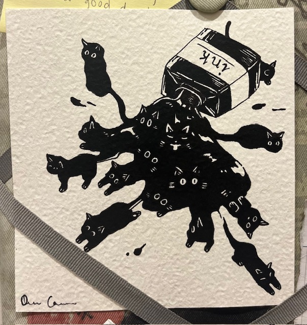
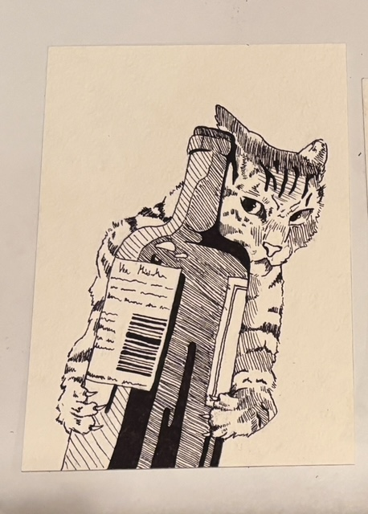
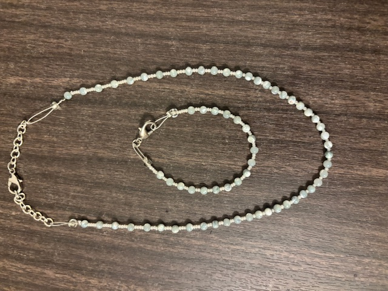
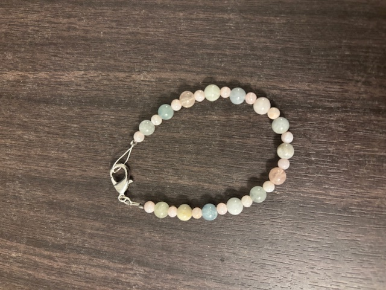
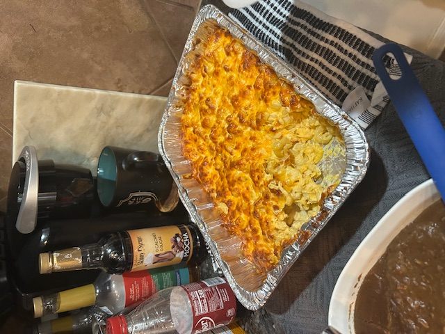
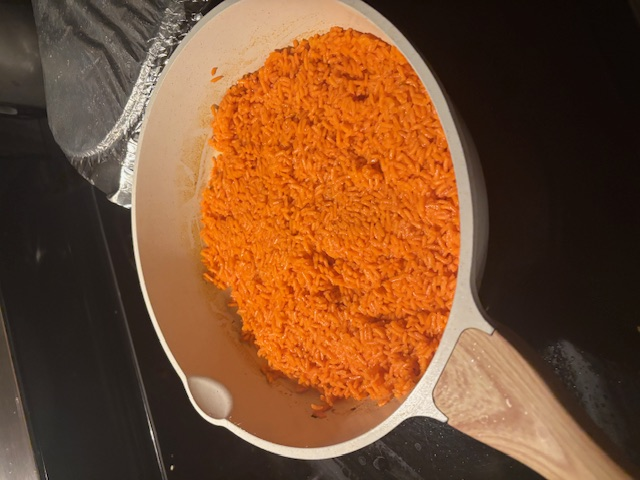

- I’ve been drawing all my life and usually prefer pen. I enjoy making artwork especially for my close friends and family.
- I recently picked up beading with my sister. So far we have made jewelry and keychains.
- I am learning to cook a lot of new foods and I was gifted a cookbook to help me through my journery.





